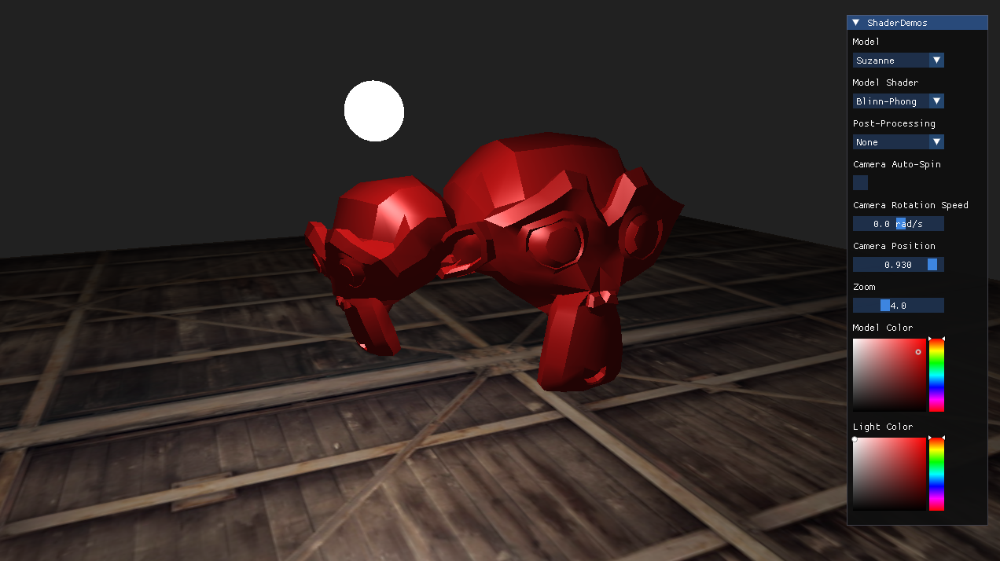
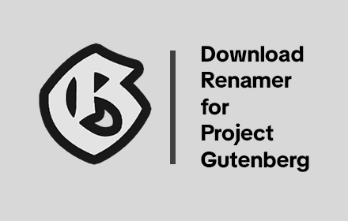
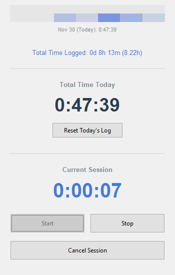

A showcase of several core rasterized graphics techniques and post-processing effects such as Blinn-Phong lighting, cel shading, dithering, Gaussian blur and the Sobel filter.

Artistic shaders written in GLSL. I use mathematical functions and raymarching to create interesting visualizations.

3D fishing game built in Unity 6. Uses C# and common programming design patterns to tie the various game systems together.


A chrome extension that intercepts and renames downloads from Project Gutenberg (a public domain book repository) to the author and title using metadata from the page.

A simple, though very personally useful, time tracking desktop program. I chose python for its ease of prototyping and deployment for simple applications. I used Google's AI-powered IDE "Antigravity" to write most of the code in order to try the "modern" workflow of heavily incorporating AI programming.